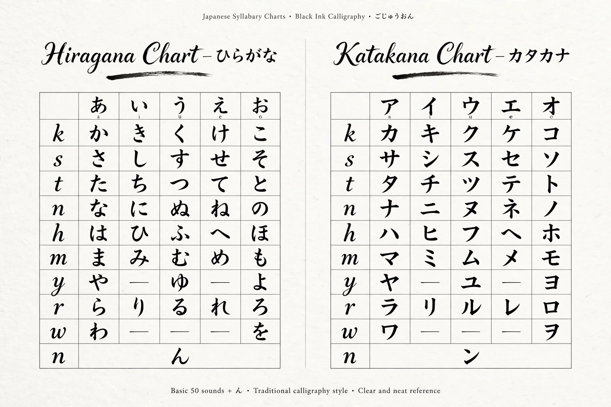

Kana

| Kana | |
| Type | Syllabary |
|---|---|
| Scripts | Hiragana, katakana |
| Developed | c. 9th century AD, Japan |
| Derived from | Man'yōgana (Chinese characters used phonetically) |
Kana are syllabaries used to write the Japanese language, alongside kanji (Chinese characters) and the Latin alphabet (rōmaji). There are two modern kana systems: hiragana, with curvilinear shapes, and katakana, with angular shapes. Each system has 46 basic characters representing the same set of syllables (morae), pronounced identically but used in different contexts.
History
Kana developed from man'yōgana, Chinese characters used purely for their sound in texts such as the 8th-century poetry anthology Man'yōshū. Buddhist monks simplified these characters into cursive forms (the basis of hiragana) and took character fragments as reading aids in sutra texts (the basis of katakana). For centuries hiragana was associated with women's writing — masterpieces such as Sei Shōnagon's The Pillow Book and Murasaki Shikibu's The Tale of Genji were written largely in it — while official documents used kanji and katakana.
Usage
Hiragana is used for native Japanese words, grammatical endings (okurigana), particles, and as pronunciation guides (furigana) printed beside kanji. Katakana is used for foreign loanwords, foreign names, onomatopoeia, scientific names, and emphasis. Both systems include small characters for palatalised sounds (きゃ kya), diacritics for voicing (゛ dakuten, ゜ handakuten), and a small っ for geminate consonants.
Ordering
The traditional ordering of kana, the gojūon ("fifty sounds"), arranges characters in a grid by vowel and consonant, beginning あ い う え お (a i u e o) and か き く け こ (ka ki ku ke ko). Each kana corresponds to one mora of Japanese, making the script a nearly perfect phonetic representation of the language's sound structure — unlike an abugida, its signs are not built from consonant letters with modifying marks.